Unblocked Nintendo 64 Games collection
Welcome to collection of some Nintendo 64 Games!
Which are unblocked, meaning you can play them at school!
Not so many games... but you can make a game request in replit ;)
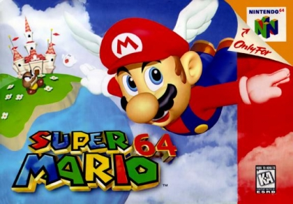Super Mario 64
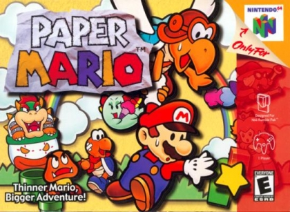Paper Mario
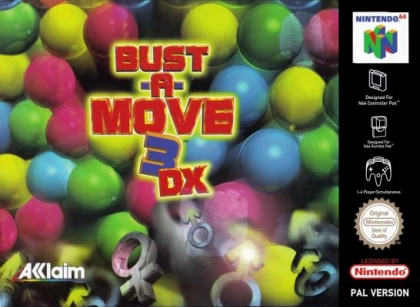Bust-A-Move 3 DX
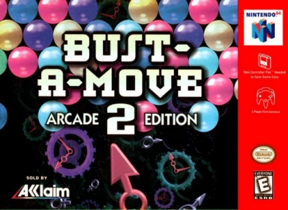Bust-A-Move 2 - Arcade Edition
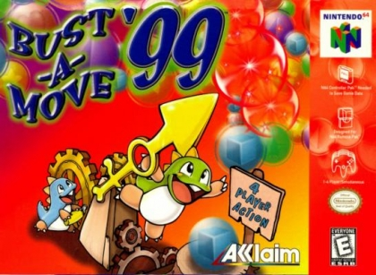Bust-A-Move '99
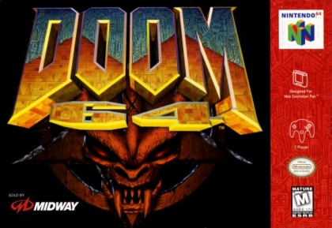Doom 64
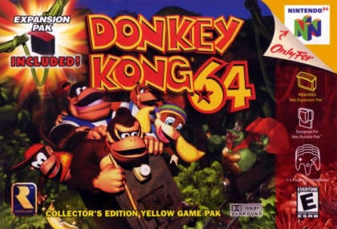Donkey Kong 64
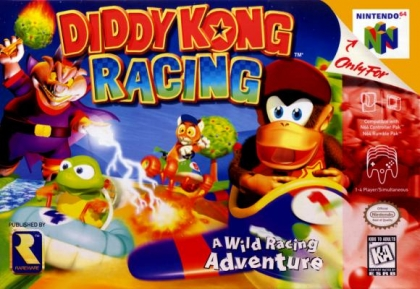Diddy Kong Racing
 Mario Kart 64
Mario Kart 64
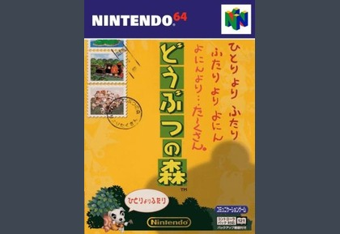Doubustu no Mori/Animal Forest (Sadly, doesn't work)
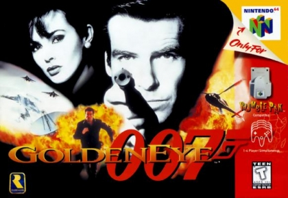GoldenEye 007
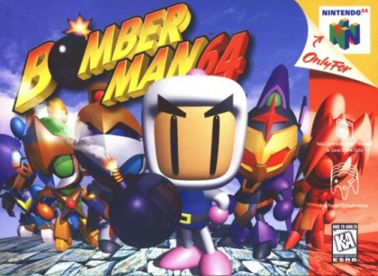BomberMan 64 (Japan)
ROMS directory
Powered by emulator.js
Lite Page